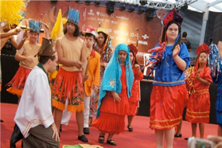

INTEGRARTE completa 15 anos e comemora no Teatro Apolo
Leiajá - 13/12/2012 14:57
Foto: Hivor Danierbe/LeiaJáImagens
 Para as pessoas que usam lentes de contato é recomendado que sejam retiradas antes dos banhos de piscina, mar, rio e entre outros
Para as pessoas que usam lentes de contato é recomendado que sejam retiradas antes dos banhos de piscina, mar, rio e entre outros
Para as pessoas que usam lentes de contato é recomendado que sejam retiradas antes dos banhos de piscina, mar, rio e entre outros
Neste sábado (15), o Centro Pró-Integração Cidadania e Arte (INTEGRARTE) comemora 15 anos com uma programação especial: o VIII Show Especial do Recife, que vai contar com a encenação "Chamada para o Natal", do grupo de teatro da entidade.
créditos da imagem
A instituição vai se apresentar, no Teatro Apolo, às 16h. Haverá também o "Cortejo Imperial", outra produção cultural do grupo de dança e percussão do INTEGRARTE. Participam do evento 50 artistas, sendo 46 com deficiência, a maioria com síndrome de Down.
A cantada natalina reúne músicas populares, clássicas e sacras de domínio. O ingresso que custa R$ 15 e será revertido para a construção da sede do INTEGRARTE.